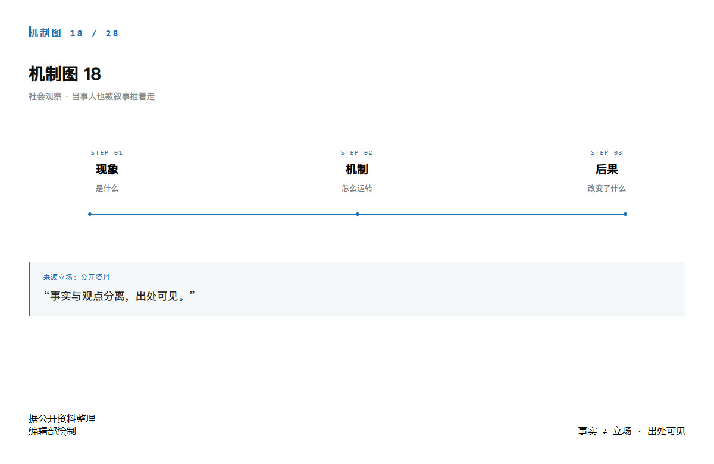

28分钟里，她把责任改了四次
社会观察 · 当事人也被叙事推着走
把 27 条原话按时间排开，会看到一个很少见的东西：责任的主语，在 28 分钟里从「他」挪到了「我」。
这些话出自 28 分钟的直播连麦，是单方陈述，未经另一方证实。下面照抄原话和进度，只删口头语，不改语义。「帽子叔叔」是直播里对警方的代称。态度为什么变，解释有多种，这里都不裁决。
这事和你有关系。有些话一旦说出口，就把你钉在了那个位置上。改口比开口贵得多。
04:05「我就觉得我被他耍了。」05:01「我当时就是想吓唬他，我就说，你这样的话，你刚才这个行为，我可以报帽子叔叔。」05:43「而且他不负责任，所以我当时就打了电话。」三句话定死位置：责任在对方，自己只是没想后果。
06:15「我就是想吓吓他，是他不抓住这个机会。」06:41「我没想过后果会这么严重。」07:12「他当时一直挑衅我，我当时脸上也挂不住，再加上他确实做了那种事，我也没想过后果会这么严重，我就打了那个电话。」责任仍全在对方，自己只是没想。
08:12「所以我也是没有办法，我无力回天了当时。」09:13「我跟他母亲已经道过歉了，我说我也不想结果是这样，但也是，也怨我男朋友。是他不负责任。」09:38「他10万块钱，他其实努一把力凑一凑就凑起来了。」还在算那 10 万。
09:51「我也有一部分过错。」10:09「我也后悔。」10:21「我也不想要这样的结果，我只是想让他长个教训。」第一次松口，认下「一部分」，因果仍推给对方。
16:35「他儿子进去，是我有一部分责任，但是他把他那个餐馆倒闭，也落到我头上。」18:41「现在就是关键是在他父母身上。」18:58「我现在就是想挽回我男朋友。」主语混进了「我」。
19:32「不，姐，我没有那么可怕。我当时真的是一时冲动，没考虑过会是这个结果。」19:50「我真的以为是这样。」被追问之后，她开始解释自己不是那种人。
21:31「我如果知道会判3年的话，我肯定不会报。毕竟我跟他谈了3年，不是说一点感情也没有。」21:38「我也不是冷血的人。」这句被剪成切片到处传，但它不是一开始就有的。
23:05「是，我承认。」23:10「确实，我男朋友现在这样，是我得负主要责任。」23:13「但是现在事情已经发生了，我就想好好过好我的生活。」从「一部分」到「主要责任」，落脚点还是日子。
24:20「是我害了他。」25:13「也就是我觉得他大概率会不会跟我在一起了？」26:44「那不姐，你这一说我明白了。」主语彻底换成「我」，不再讨价还价。
27:48「我知道现在这个结果，是我自己该承受的。」28:19「我现在也没其他办法。」整场连麦 28 分钟，没有一句是别人替她说的。到这儿，只剩下承受。
四句原话，四个位置：05:43「是他不负责任」，09:51「我也有一部分过错」，23:10「是我得负主要责任」，24:20「是我害了他」。28 分钟，主语从他挪到我。
态度为什么会变，有反思、有压力、有策略调整好几种解释，这里一种都不裁决，只认能核对的刻度：话在改，位置在移动。
📌 四句原话，四个位置
「是他不负责任」→「我也有一部分过错」→「是我得负主要责任」→「是我害了他」。主语从他挪到我。
当事人原话 · 音频进度 24:20
「是我害了他。」
主语彻底换成「我」，不再讨价还价，只剩承受。

▲ 责任刻度的四句原话（编辑部绘制）
✍️ 听到改口，你会怎么想？
是觉得她终于想明白了，还是觉得她被对话推着走？评论区说说。觉得有用，点个赞、点个「在看」。
下一篇：对轰和沉默之外，还有第三种位置吗。
资料来源
《2026.11.11 · 28.8 万彩礼谈崩》原声实录附页：27 条逐字引语，按连麦音频进度排列，仅删去重复口头语，未改动语义；小标题与归纳为编辑部所加。
连麦为单方陈述，未经另一方证实。态度转变的归因（反思、舆论压力、策略调整等）不裁决，只采「刻度在移动」这一可核对事实。
「帽子叔叔」为直播中对警方的代称；「责任刻度」为编辑部归纳，非当事人原话。
社会观察，不站任何性别立场。个案是非不裁决，单方陈述不转述为事实。拆解是为了理解，不是行动指南。